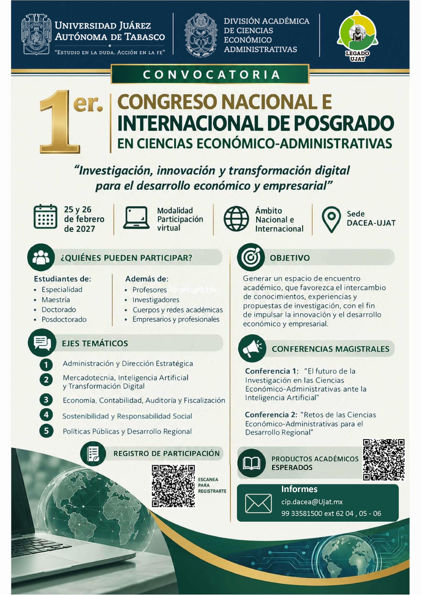

01
Estudiantes de Posgrado
Podrán participar estudiantes de los siguientes niveles:
- Especialidad
- Maestría
- Doctorado
- Posdoctorado


1er Congreso Nacional e Internacional de Posgrado en Ciencias Económico-Administrativas
Investigación, innovación y transformación digital para el desarrollo económico y empresarial.
Del 25 y 26 de febrero de 2027
Modalidad: Presencial
UJAT - DACEA, Centro de Cómputo
Un encuentro para fortalecer el conocimiento y la innovación.
Generar un espacio de encuentro académico, que favorezca el intercambio de conocimientos, experiencias y propuestas de investigación, con el fin de impulsar la innovación y el desarrollo económico y empresarial.
Un espacio académico abierto a estudiantes, investigadores y profesionales.
Podrán participar estudiantes de los siguientes niveles:
El Congreso contempla la participación de:
Participación de empresarios y profesionales interesados en la investigación, innovación y desarrollo económico-administrativo.
Áreas de investigación establecidas en la convocatoria oficial.
Temáticas académicas anunciadas para el Congreso.
El futuro de la Investigación en las Ciencias Económico-Administrativas ante la Inteligencia Artificial.
Retos de las Ciencias Económico-Administrativas para el Desarrollo Regional.
Consulta directamente la convocatoria institucional del Congreso UJAT 2027.

Obtén una copia del documento oficial en formato PDF para consultarlo o compartirlo.
Descargar convocatoria en PDFInformación para formar parte del Congreso.
La convocatoria oficial incluye un código QR para acceder al registro de participación.
Puedes consultar el código directamente en la imagen de la convocatoria que aparece en esta página.
Ir a registro